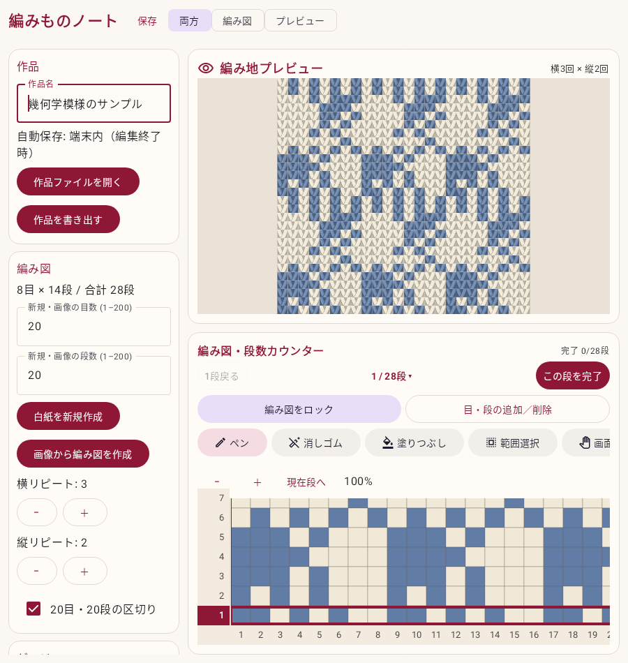

01 — DRAW
好きな色で、模様をつくる。
目数と段数を決めたら、マスをタップ。ペン・塗りつぶし・反転・コピーで、繰り返し模様も気軽に。
画像からの編み図づくりにも対応FOR THE LOVE OF KNITTING
色を置いて、編み地を眺めて、また一段。
編み図づくりから「いま、何段目？」まで。
あなたの編み物に寄り添う、小さな道具です。
無料試用版 v0.3.0 ／ Android 8.0以上 ／ アカウント登録不要

NEW · v0.3.0
「目・段の追加／削除」から、指定した段以降の増し目・減らし目や段の挿入・削除ができます。下端の目番号で位置を確かめ、編むときは編み図をロック。ロック中も段数カウンターとメモは使えます。
追加・削除は「元に戻す」で取り消せます。リピート中の変更は、柄を1枚に展開してから反映します。
MADE FOR YOUR KNITTING TIME
紙の編み図とマーカーのように。
デジタルならではの使いやすさを添えて。
01 — DRAW
目数と段数を決めたら、マスをタップ。ペン・塗りつぶし・反転・コピーで、繰り返し模様も気軽に。
画像からの編み図づくりにも対応02 — PREVIEW
同じ編み図データから、V字の編み目を表示。色の変更もリピートもそのまま反映。1段目は一番下です。
プレビューは編み地のイメージです03 — KEEP GOING
段番号をタップして選択。編めたら「この段を完了」で次へ。現在段と完了のチェック、段ごとのメモが目印に。
編み図・進捗は端末に自動保存A LITTLE MORE ROOM
Foldの大きな画面では、設定・編み地・編み図を一緒に。小さな画面では縦に並べて使えます。
Galaxy SM-F971Qでインストール・基本操作を確認。
端末によって表示は異なります。すべての機種での動作を保証するものではありません。
YOUR FIRST THREE STEPS
スマートフォンだけで始められます。
パソコンやケーブルは必要ありません。
下のダウンロードボタンから「AmimonoNote-0.3.0-debug.apk」を保存します。APKは、Androidにアプリを入れるためのファイルです。
パソコンで見ている場合は、ページのURLをスマートフォンへ送ってください。
ブラウザーのダウンロード一覧、または端末の「マイファイル」「Files」からAPKを開きます。許可を求められたら、設定で使用中のブラウザーなどに「この提供元のアプリを許可」を設定し、元の画面でインストールします。
Google Play外の試用版です。表示される内容を確認して進めてください。項目名は端末により異なります。インストール後は許可を元に戻せます。Googleの案内 ↗
「編みものノート」を開くとサンプルが表示されます。色を選んでマスを塗ってみましょう。段を数える時は左端の段番号をタップし、編めたら「この段を完了」。自分の模様は「白紙を新規作成」から作れます。
サンプルを残したい時は「作品を書き出す」で保存してから編集してください。
LET'S CAST ON
編みものノート Android版
v0.3.0 · 無料試用版（デバッグAPK）
Android 8.0以上 · 約16.9 MB · 2026年9月14日更新
GitHubへのログインは不要です。
更新内容・ファイル情報 ↗A FEW THINGS TO KNOW
つまずいた時は、こちらから。
このページのv0.3.0試用版は無料でダウンロードできます。アカウント登録やアプリ内課金はありません。開発途中のため、使い心地や不具合に気づいたらぜひお知らせください。
Android 8.0以上であること、APKを最後までダウンロードできていること、空き容量を確認してください。ファイルを開いたアプリの「不明なアプリのインストール」が許可されているかも確認します。
端末の保護機能・管理者設定・開発者の確認によって制限される場合があります。設定変更の意味が分からない場合は無理に進めず、表示されたメッセージと機種名を添えてお問い合わせください。Android公式の案内 ↗
編み図、毛糸、現在段、完了段、メモはアプリ内に端末保存します。画像からの変換も端末で処理し、アプリ独自のサーバーへ送信しません。Androidのバックアップ設定によってOSのバックアップ対象になる場合があります。
アンインストールや端末のデータ消去で作品が失われることがあるため、「作品を書き出す」から別の場所にも保存してください。この配布サイトには独自のアクセス解析や広告を設置していません。配信にはGitHub Pages / Releasesを利用します。
マスの色・配置・リピート数は編み図と対応します。毛糸の質感を付けたV字のイメージ表示です。実際の編み地の寸法、毛糸の太さ、ゲージ、糸の引き加減までは再現しません。
最初に作品を書き出してバックアップし、新しいAPKを開いて更新します。同じ署名の更新では通常データが引き継がれます。更新できない場合、作品を保存せずにアンインストールしないでください。
GitHubの報告フォームから、機種名・アプリのバージョン・起きたことを教えてください。報告にはGitHubアカウントが必要です。投稿は公開されるので、個人情報や公開したくない画像は含めないでください。